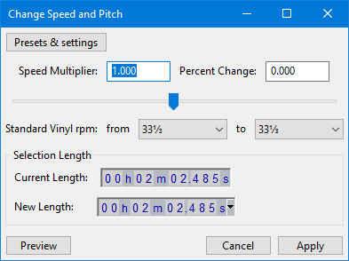

Change Speed and Pitch
To change tempo without affecting pitch or frequency range, use or .
All controls are linked, so changing one will change the others.
Note carefully that when you apply an effect to a time-stretched clip the changed speed of the clip will be automatically rendered.
|
| If you apply this effect with an envelope present then there is a bug whereby the envelope is removed and the audio reverts to its full amplitude state prior to the effect being applied. |
| If you need to change the speed and pitch independently you can use the Clip context menu. But note that this applies to an entire clip, not a selection or a track. |
- Accessed by:
- 
Speed Multiplier
This sets how many times faster or slower the audio will play. For example, setting this to "2.000" will double the speed (and raise the pitch by one octave), or setting this to "0.500" will halve the playback speed (and lower the pitch by one octave).
Values between 0.010 (1/100th of the original speed) and 50.000 (50 times faster) are permitted. Values outside of this range will gray out the and buttons and cannot be applied.
Percent Change
If you know how much you want to change the speed of the audio in percent, enter that value here. You can also drag the slider to choose a Percent Change - the input box and the Speed Multiplier will update as you drag the slider.
Values between -99.000 % (equivalent to 1/100th of the original speed) and 4900.000 % (equivalent to 50 times faster) are permitted. Values outside of this range will gray out the and buttons and cannot be applied.
Examples:
- A change of +100 % (double speed) is the same as multiplying the speed (Speed Multiplier setting) by 2.
- A change of -50 % (half speed) is the same as multiplying the speed by 0.5.
- A change of +20 % is the same as multiplying the speed by 1.2.
- A change of -20 % is the same as multiplying the speed by 0.8
Standard Vinyl rpm
If you have a recording of a record that was played back and recorded at the wrong speed you can correct that using these two dropdown menus. In the from dropdown choose the speed the record was played back at then in the to dropdown choose the speed it should have been played back at.
Selection Length
The Current Length time control indicates the length of the current selection. This control is for information only and cannot be modified.
The New Length time control sets the length that the selection will be after applying the effect.
The Selection Format may be changed by selecting the required option from the dropdown menu of the New Length control. To access the dropdown menu, click the little black downwards-pointing triangle on the right end of the time control, right-click over any of its time digits, or select any of the digits then use the keyboard Menu Key. Changing the format in the New Length control will also update the digits in the Current Length control.